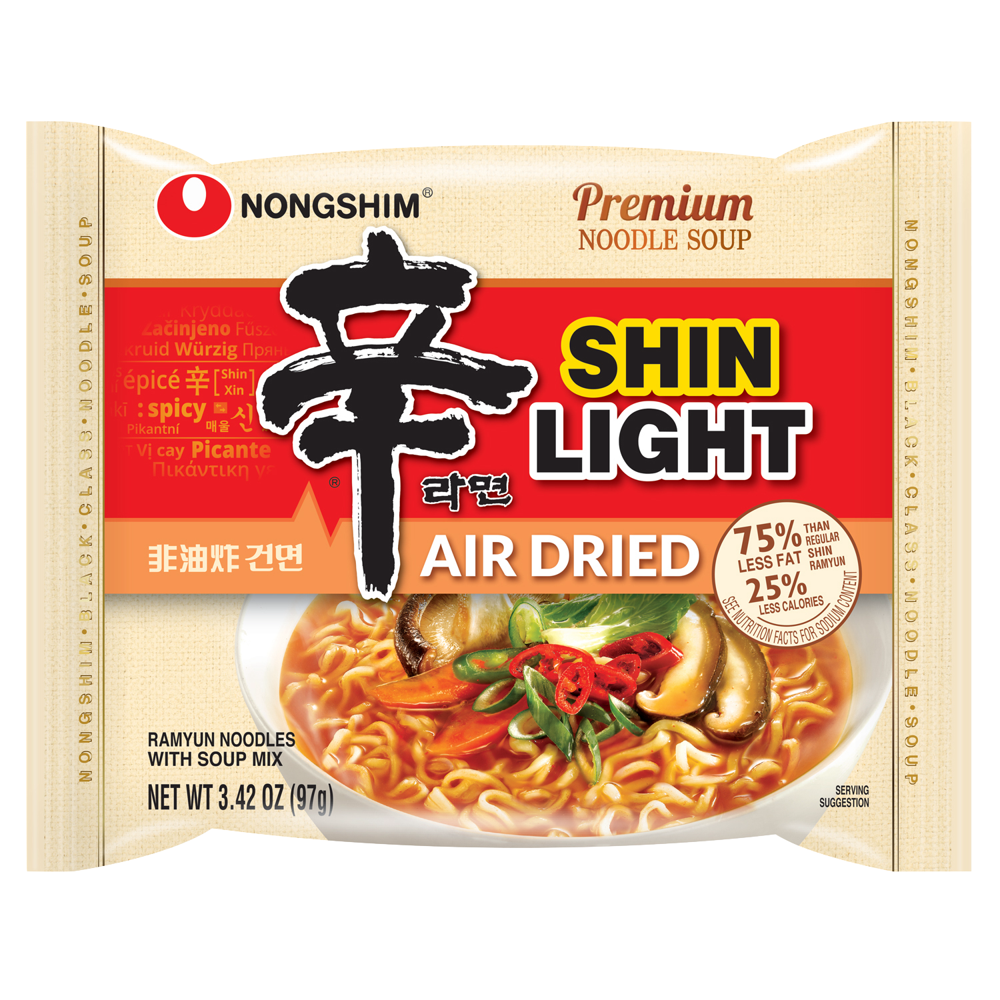
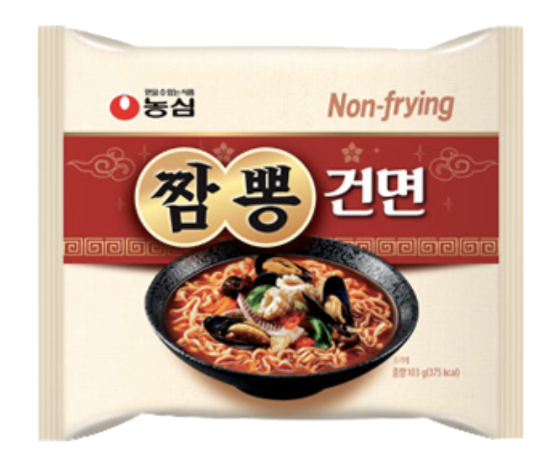
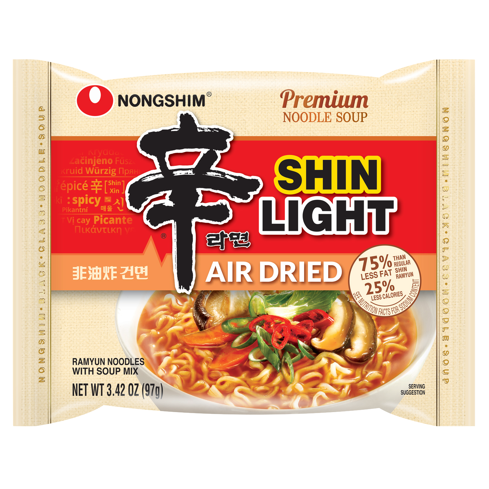
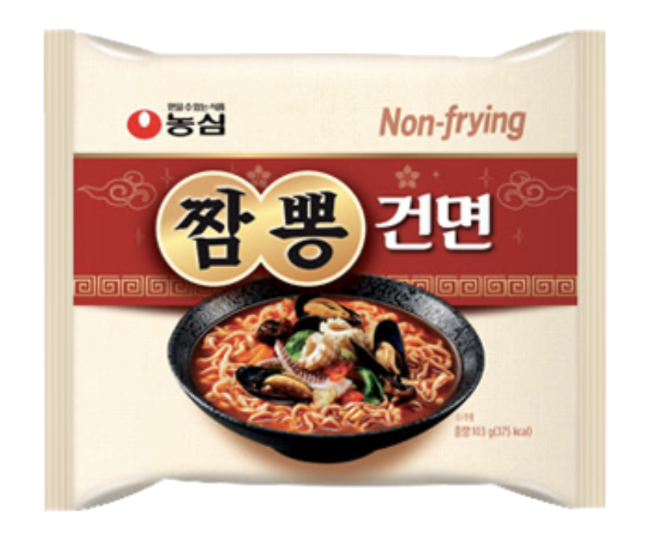

Shin Ramyun Black
Weight: 130g
Year of Release: 2017
Rating: 4.5/5
Notable flavors: pork broth, spicy flakes
This better than the OG Shin, largely because it's the premium version, thicker in flavor and spicer. I appreciated the pork flavor and general enhancement of its original.
 


